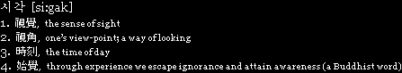
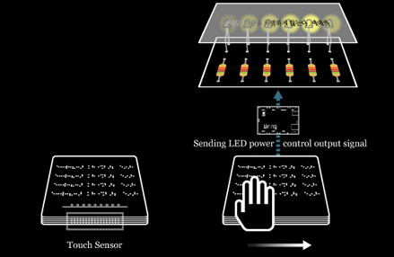

| dot . a scene = sinθ at the sea _ tactuaL [si : gak] series #2 |
|  |  |
since _ December, 2007 concept work by Haemin Kim ttechnical support _ Junghun Kim | sample electronics special thanks to_ prof.Myungjin Baek & prof.Suzung Kim & Heesook Jung & Sungju Park & Jihong Kim & Juyeon Tamy Lee |
| specification | tactuaLight [text] #1 . seashore | how it works | ||||
| size _ 530 × 60 × 370 mm medium _ printed paper, LED bulbs, wiring I/O board, Quantom Qslide Touch Senso0r E411 |
We can read a sentence by Hands. Braille Type >>> Visual Type Tactual Sense + Light = Text |
 | ||||
| contained sentences _ 점입가경 [點入佳境].dot a scene : sin at the sea 손끝으로 바다를 바라보다 촉각으로 읽기 : 보기 : 듣기 |
||||||
| Through this interactive process, we can understand how the blind may feel. >>> back to top >>> detail |
||||||
| built with Processing, Wiring, MAX/MSP, Jitter copyright 2007-2008 (at) haemin kim |